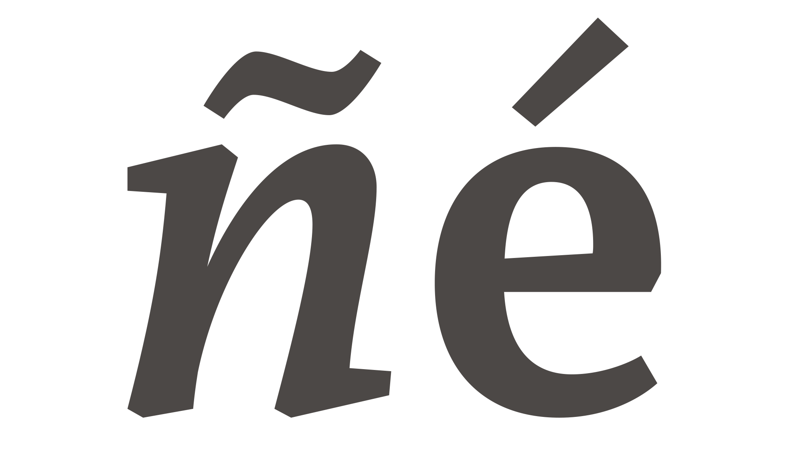
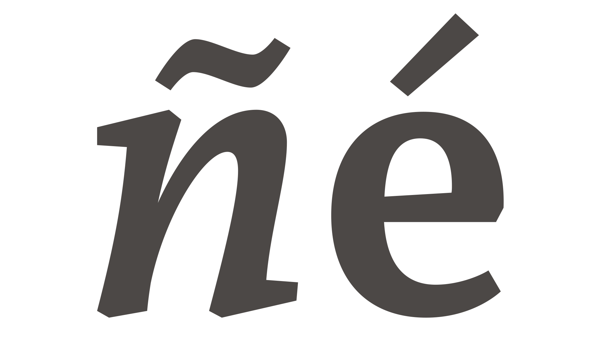
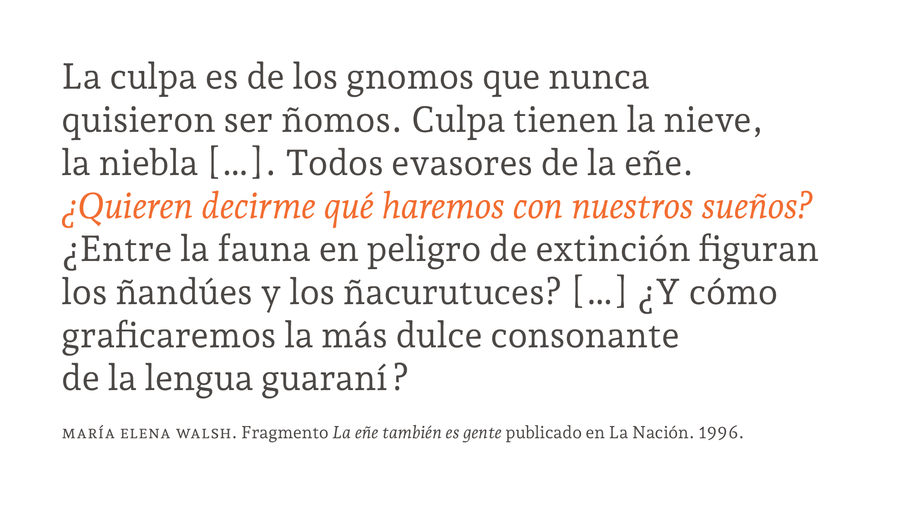
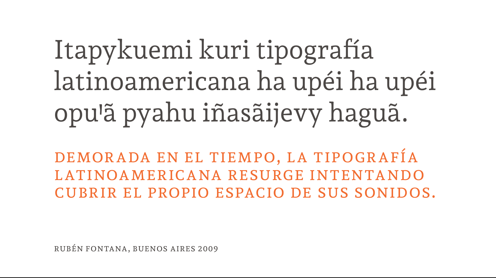
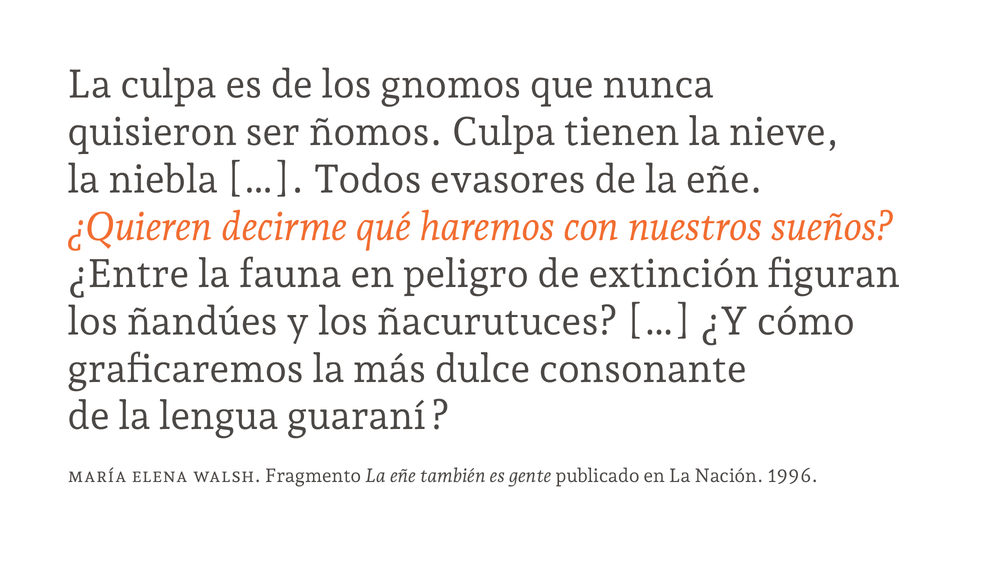
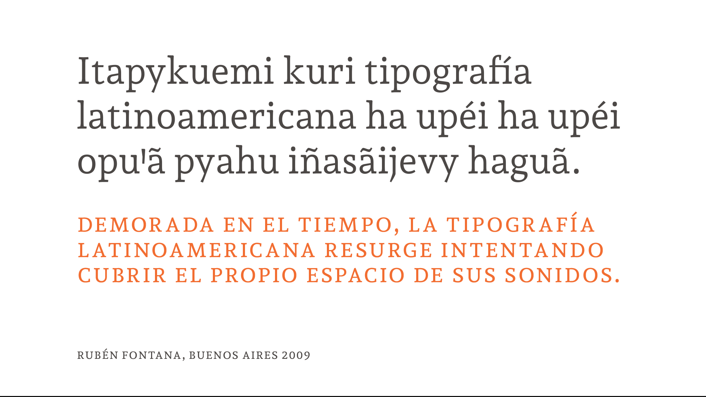
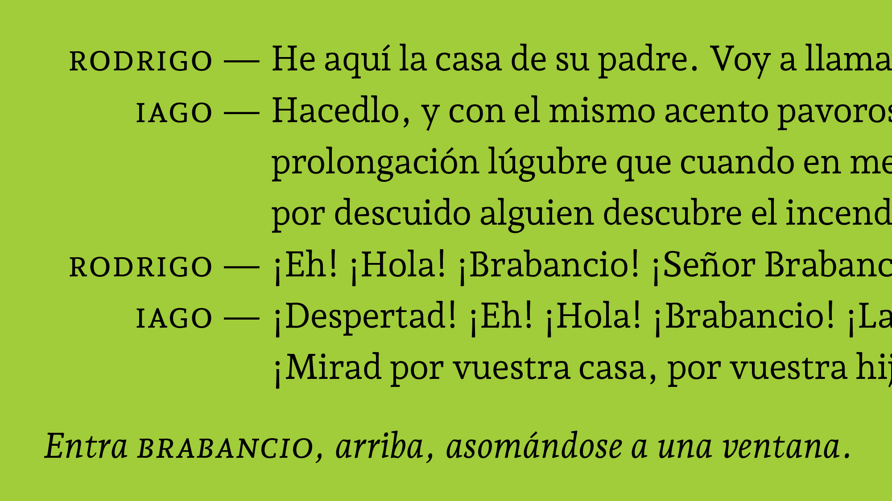
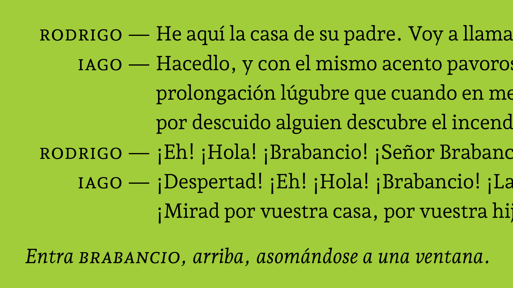

Andada ht - Regular
Andada ht - Italic
Andada ht - Medium
Andada ht - Medium Italic

 

 



Andada ht was born from the relationship between language and typography. It is an organic-slab serif, hybrid style and medium contrast type for text. Initially it was designed to be used in a specific bilingual context, Spanish and Guaraní (pre-hispanic) languages therefore the language is its design criteria.
The Guaraní language uses the latin system, it has a character named puso, which is an identifying sign for Guaraní, like the ñ in Spanish, the č in Czech or the ß in German. The correct sign to represent the puso is the saltillo (Saltillo uniA78B, saltillo uniA78C), but usually it’s replaced by an apostrophe because the saltillo does not appear in the spanish, english or portuguese keyboards layouts.
During these 10 years of work I have looked for different solutions to improve the composition of text in guaraní, from the typographical and technical points of view.
I have developed a new keyboard distribution, which allows the guaraní language users to normally type in their language.
Following the original idea of language as design criteria, Andada ht has improved its performance in different languages:
FSince 2019 Andada ht has 4 weights. The Regular is lighter and the bold turns into extra bold, and now there is room for the new family members.

Classification: Letter.
Many alphabets use it to represent glottal occlusion oder glotal stop phoneme. It doesn't have a shortcut from the Spanish or English keyboard, this is the reason for its resemblance by the apostrophe, it has a key. That replacement creates confusion. Saltillo and apostrophe have different Unicode points and functional categories, one is a letter and the other is a punctuation mark, this discrepancy causes conflicts in the digitization of texts.
Classification: Punctuation mark.
Many languages use the apostrophe als mark elision, separate morphemes or indicate inflections. This glyph also coincides with the single quotation mark, which in Spanish occupies the last hierarchy « “ ‘Hello’ ” ». Many linguists and authors use it to graphically represent the phonemes of the glotal occlusion or suspension or the aspirated letters.
Classification: Mathematical sign.
This sign is used als the abbreviations of minute (60′ = 1º) or the measure of foot length (1 ′ = 12 ″). It can be straight or inclined but it doesn’t be confused with the quotation mark.
Latin America, Caribbean, Spain and differents regions where Guaraní-speaking groups are.
It is official language in:
It is regulated by the Guaraní Language Academy.
It has approximately 8,000,000 speakers.
Its family language is Tupí
It uses the Latin system writing.
It makes up of 33 letters, they are ordered as follows:
A, Ã, Ch, E, Ẽ, G, G̃, H, I, Ĩ, J, K, L, M, Mb, N, Nd, Ng, Nt, Ñ, O, Õ, P, R, Rr S, T, U, Ũ, V, Y, Ỹ, Ꞌ.
It is regulated by the Guaraní Language Academy.
It has approximately 8,000,000 speakers.
Its family language is Tupí
It uses the Latin system writing.


Follow the language validation from Underware, Andada ht pro support 219 languages from 212 countries: Abenaki, Afaan Oromo, Afar, Afrikaans, Albanian, Alsatian, Amis, Anuta, Aragonese, Aranese, Aromanian, Arrernte, Arvanitic (Latin), Asturian, Atayal, Aymara, Azerbaijani, Bashkir (Latin), Basque, Belarusian (Latin), Bemba, Bikol, Bislama, Bosnian, Breton, Cape Verdean , Creole, Catalan, Cebuano, Chamorro, Chavacano, Chichewa, Chickasaw, Cimbrian, Cofán, Cornish, Corsican, Creek, Crimean Tatar (Latin), Croatian, Czech, Danish, Dawan, Delaware, Dholuo, Drehu, Dutch, English, Esperanto, Estonian, Faroese, Fijian, Filipino, Finnish, Folkspraak, French, Frisian, Friulian, Gagauz (Latin), Galician, Ganda, Genoese, German, Gikuyu, Gooniyandi, Greenlandic (Kalaallisut), Guadeloupean Creole, Gwich’in, Haitian Creole, Hän, Hawaiian, Hiligaynon, Hopi, Hotcąk (Latin), Hungarian, Icelandic, Ido, Igbo, Ilocano, Indonesian, Interglossa, Interlingua, Irish, Istro-Romanian, Italian, Jamaican, Javanese (Latin), Jèrriais, Kaingang, Kala , Lagaw Ya, Kapampangan (Latin), Kaqchikel, Karakalpak (Latin), Karelian (Latin), Kashubian, Kikongo, Kinyarwanda, Kiribati, Kirundi, Klingon, Kurdish (Latin), Ladin, Latin, Latino sine Flexione, Latvian, Lithuanian, Lojban, Lombard, Low Saxon, Luxembourgish, Maasai, Makhuwa, Malay, Maltese, Manx, Māori, Marquesan, Megleno-Romanian, Meriam , Mir, Mirandese, Mohawk, Moldovan, Montagnais, Montenegrin, Murrinh-Patha, Nagamese Creole, Nahuatl, Ndebele, Neapolitan, Ngiyambaa, Niuean, Noongar, Norwegian, Novial, Occidental, Occitan, Old Icelandic, Old , Norse, Onĕipŏt, Oshiwambo, Ossetian (Latin), Palauan, Papiamento, Piedmontese, Polish, Portuguese, Potawatomi, Q’eqchi’, Quechua, Rarotongan, Romanian, Romansh, Rotokas, Sami (Inari Sami), Sami (Lule Sami), Sami (Northern Sami), Sami (Southern Sami), Samoan, Sango, Saramaccan, Sardinian, Scottish Gaelic, Serbian (Latin), Seri, Seychellois Creole, Shawnee, Shona, Sicilian, Silesian, Slovak, Slovenian, Slovio (Latin), Somali, Sorbian (Lower Sorbian), Sorbian (Upper Sorbian), Sotho (Northern), Sotho (Southern), Spanish, Sranan, Sundanese (Latin), Swahili, Swazi, Swedish, Tagalog, Tahitian, Tetum, Tok Pisin, Tokelauan, Tongan, Tshiluba, Tsonga, Tswana, Tumbuka, Turkish, Turkmen (Latin)Tuvaluan, Tzotzil, Uzbek (Latin), Venetian, Vepsian, Volapük, Võro, Wallisian, Walloon, Waray-Waray, Warlpiri, Wayuu, Welsh, Wik-Mungkan, Wiradjuri, Wolof, Xavante, Xhosa, Yapese, Yindjibarndi, Zapotec, Zarma, Zazaki, Zulu & Zuni.


Historically, these ligatures were designed to improve the kerning and readability of certain letter pairs that, due to their design or structure maked the setting difficult. Here this tradition continues as an aesthetic resource. This feature should be active by default. Here are the standard and historical ligatures.

They are designed to be ornamental, and not specifically designed for readability. This feature should be off by default.

This feature should be active by default. It is designed to enhance readability by providing better joining behavior between the characters that make up the ligature.

We haben two small caps option:
The orthotypographic rules or “conventions” for the use of small caps are not strict, nowadays their function is more aesthetic than communicational.
[More info: Orthotypography]

By default, glyphs in a text typeface are designed to work with lowercase character, sometime you could need to set your text in all caps, then figures, parenthesis, guillemets, dashes, hyphens and other punctuation marks don’t match with lowercase. When the “all caps feature” (not when text is typed in caps) appropriate case-sensitive forms are automatically applied. The living together between uppercase, non alphabetic signs, numbers, punctuation, etc, required a space, proportion, position review. This feature is developed to enhance the word's and paragraph's rhythm.
It's active by default when the text hat the “All Caps” option activate.
The typographic category affected are: letters, punctuation, figures and symbols.

Each figures (number) set is designed for a particular design situation. Therefore each set has its own space, proportion and structure to live together with its own type-partners.
Lining or uppercase figures are designed to harmonize with uppercase, and old style, lowercase or Elzevir figures are designed to live together with lowercase, then they have ascender, descender and lowercase proportion.
The lining figures in Andada ht are not lining, they are “hybrid figures” and they are the default set. They have shorter ascender and descender, ther have a proportion between uppercase and lowercase.
[More info: Orthotypography]

The tabular figures’ priority is the vertical readability and the proportional figures’ priority is the horizontal readability.
The tabular figures have a fixed width in all weights and variables. They can build a column in tables and lists.
The proportional habe different proportion to harmonized with horizontal text context.

This feature replaces all figures with their superior/inferiors alternates. which can be used for footnotes, mathematical, chemical or scientific notation.
The superscript set affected are figures, lowercase letters, some punctuations and some symbols.
In other hand, subscript and scientific inferior are the same set.

Numerators and denominators are aligned to build diagonal fractions.
The font includes a basic set one —¼ ½ ¾ ⅓ ⅔ ⅛ ⅜ ⅝ ⅞—, they are activated by default with the openType ligatures.
If the fraction feature is activated, you can build any fractions quickly only typing the sequence: [number] [slash] [number]. The numbers before the slash are replaced by numerators, the numbers after slash are replaced by denominators and the slash glyph is replaced by the bar.
This feature can differentiate between fractions and dates.

This feature replaces default alphabetic glyphs with the corresponding ordinal forms and transform it in an ordinal expression.

This feature replaces default apostrophe or quotesingle glyphs (U+0027 or U+2019) with the corresponding saltillo glyph (U+A78B - U+A78C, lower- uppercase). It only happen if the apostrophe or quotesingle is between vocals.

Andada ht has two design for cedilla, connected and unconnected.
If the text is setting in french this feature replaces default cedilla connected glyph with the corresponding unconnected form.
The default cedilla form is the connected one.

This feature replaces i v x d c l m glyphs with the corresponding glyphs forms for the romans numbers.

This feature replaces 1-0 glyphs with arrows glyphs forms.

This feature replaces a-z glyphs with geometrical glyphs forms.

This feature replaces [x] [hyphen] and [slash] glyphs with the corresponding mathematicals glyphs forms [multiply] [minus] and [divide].


A number could be written in figures (numbers: 1 2 3…) or in letters (words: one, two, three…).
The figures have the same hierarchy als word and both have to observe the same orthographic and orthotypographic rules except for the hyphenate.
Figures belong to figures system and letters belong to letter system. When a text has letters and figures have to reconcile both systems.
The contents and the sense of the text is important to decide if you must use figures or letters.
> Usage tips:


 



Book cover and interior pages for Transpassar, an anthology of poems about the streets of São Paulo.
The book was published by SESI-SP Editora and designed by graphic design studio Daó and Gabriela Pires.
Andada ht + Montserrat
[fontsinuse]


Editorial Atlantida. Designed by ZkySky
Andada ht + Brandon Grotesque + STHeiti.
[fontsinuse]


Ediciones Urania. Designed by Gustavo Ibarra y Ral Veroni.
Andada ht + Futura
[fontsinuse]

Designed by Alec Dempster and Manuel López Rocha.
Andada ht
[fontsinuse]
Ediciones Urania. Designed by Gustavo Ibarra y Ral Veroni.
Andada ht + Telder ht + Diplomata
[fontsinuse]

Ediciones Urania. Designed by Gustavo Ibarra y Ral Veroni.
Andada ht + Futura
[fontsinuse]
This trial fonts contain only the basic characters —A-Z, a-z, 0-1—, and the basic punctuation characters —period and comma—. You can use the trial fonts for testing in your layouts, but not for the final artwork.